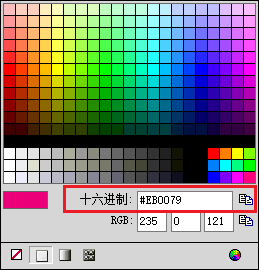
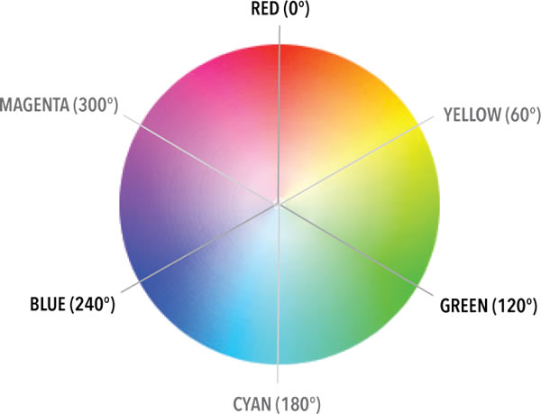
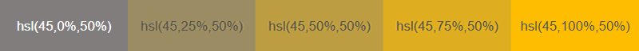
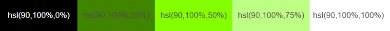
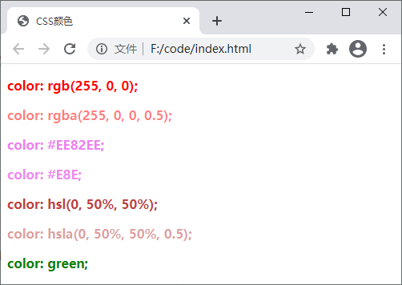

CSS颜色设置（6种方法）
我们在显示屏上看到的各种颜色都是通过红（red）、绿（green）、蓝（blue）三原色组合而成的，按不同的比例混合这三种颜色就可以得到其它颜色，通过调整红、绿、蓝三种颜色的数值可以最大限度的控制颜色。
CSS 中提供了一些属性（例如 color、background）来设置 HTML 元素的颜色（例如元素的背景颜色或字体颜色），我们可以通过不同形式的值来指定颜色，如下表所示：
除了上表中介绍的 17 个颜色外，浏览器中还支持很多的颜色名称，但不同的浏览器之间对颜色的解析可能存在差异，为了安全起见，不建议您在 CSS 中使用颜色名称来指定颜色。
您需要借助 rgba() 函数来使用 RGBA 模式，该函数需要接收四个参数，除了 red、green、blue 三种颜色的强度外，还需要一个 0~1 之间的小数来表示颜色的透明度，其中 0 表示完全透明，1 表示完全不透明。rgba() 函数的语法格式如下：
【示例】通过不同的方式来为 HTML 元素设置颜色：
CSS 中提供了一些属性（例如 color、background）来设置 HTML 元素的颜色（例如元素的背景颜色或字体颜色），我们可以通过不同形式的值来指定颜色，如下表所示：
| 值 | 描述 | 实例 |
|---|---|---|
| 颜色名称 | 使用颜色名称来设置具体的颜色，比如 red、blue、brown、lightseagreen 等，颜色名称不区分大小写 | color: red; |
| 十六进制码 | 使用十六进制码以 #RRGGBB 或 #RGB（比如 #ff0000）的形式设置具体颜色，"#" 后跟 6 位或 3 位十六进制字符（0-9, A-F） | color: #f03; |
| RGB | 通过 rgb() 函数对 red、green、blue 三原色的强度进行控制，从而实现不同的颜色 | color: rgb(255,0,51); |
| RGBA | RGBA 扩展了 RGB，在 RGB 的基础上增加了 alpha 通道来设置颜色的透明度，需要使用 rgba() 函数实现 | color: rgba(255,0,0,0.1); |
| HSL | 通过 hsl() 函数对颜色的色调、饱和度、亮度进行调节，从而实现不同的颜色 | color: hsl(120,100%,25%); |
| HSLA | HSLA 扩展了 HSL，在 HSL 的基础上增加了 alpha 通道来设置颜色的透明度，需要使用 hsla() 函数实现 | color: hsla(240,100%,50%,0.5); |
1. 颜色名称
使用颜色名称来设置颜色是最简单的方法。CSS 中定义了一些表示颜色的关键字，如下表中所示，使用这些关键字可以轻松的为元素设置颜色。| 颜色名 | 颜色 | 颜色名 | 颜色 |
|---|---|---|---|
| aqua | 天蓝 | black | 黑色 |
| blue | 蓝色 | fuchsia | 品红 |
| gray | 灰色 | green | 绿色 |
| lime | 浅绿 | maroon | 紫红色 |
| navy | 深蓝 | olive | 橄榄色 |
| orange | 橙色 | purple | 紫色 |
| red | 红色 | silver | 浅灰色 |
| teal | 蓝绿色 | white | 白色 |
| yellow | 黄色 |
除了上表中介绍的 17 个颜色外，浏览器中还支持很多的颜色名称，但不同的浏览器之间对颜色的解析可能存在差异，为了安全起见，不建议您在 CSS 中使用颜色名称来指定颜色。
2. 十六进制码
十六进制码是指通过一个以 # 开头的 6 位十六进制数（0~9，a~f）表示颜色的方式，这个六位数可以分为三组，每组两位，依次表示 red、green、blue 三种颜色的强度，例如：
h1 {
color: #ffa500;
}
p {
color: #00ff00;
}
您可以使用 PhotoShop、Fireworks 等制图软件来获取颜色的十六进制码，如下图所示：

图：获取颜色的十六进制码
图：获取颜色的十六进制码
提示：在使用十六进制码表示颜色时，如果每组的两个十六进制数是相同的，例如 #00ff00、#ffffff、#aabbcc，则可以将它们简写为 #0f0、#fff、#abc。
3. RGB
RGB 是 red、green、blue 的缩写，它是一种色彩模式，可以通过对 red、green、blue 三种颜色的控制来实现各式各样的颜色。CSS 中要使用 RGB 模式来设置颜色需要借助 rgb() 函数，函数的语法格式如下：rgb(red, green, blue)
其中 red、green、blue 分别表示三原色红、绿、蓝的强度，这三个参数的取值可以是 0~255 之间的整数，也可以是 0%~100% 之间百分比数值。如下例所示：
h1 {
color: rgb(255, 165, 0);
}
p {
color: rgb(0%, 100%, 0%);
}
4. RGBA
RGBA 是 RGB 的扩展，在 RGB 的基础上又增加了对 Alpha 通道的控制，Alpha 通道可以设置颜色的透明度。您需要借助 rgba() 函数来使用 RGBA 模式，该函数需要接收四个参数，除了 red、green、blue 三种颜色的强度外，还需要一个 0~1 之间的小数来表示颜色的透明度，其中 0 表示完全透明，1 表示完全不透明。rgba() 函数的语法格式如下：
rgba(red, green, blue, alpha);
其中 red、green、blue 分别表示三原色红、绿、蓝的强度，alpha 表示颜色的透明度，例如：
h1 {
color: rgba(255, 0, 0, 0.5);
}
p {
color: rgba(0, 255, 0, 1);
}
5. HSL
HSL 是 Hue（色调）、Saturation（饱和度）、Lightness（亮度）的缩写，它同样也是一种色彩模式，可以通过对色调、饱和度、亮度三个属性的调节来实现不同颜色的。CSS 中使用 HSL 模式需要借助 hsl() 函数，函数的语法格式如下：hsl(hue, saturation, lightness)
语法说明如下：1) hue
参数 hue 表示颜色在色盘上的度数（从 0 到 360），0 或 360 表示红色，120 表示绿色，240 表示蓝色，如下图所示；

图：hue参数说明
图：hue参数说明
2) saturation
参数 saturation 为一个百分比数值，表示色彩的饱和度，0% 表示灰色，100% 表示全彩。

图：saturation 参数说明
图：saturation 参数说明
3) lightness
参数 lightness 同样为一个百分比数值，表示颜色的亮度，0% 是黑色（没有亮度），50% 为最合适的亮度（既不发黑也不过亮），100% 是白色（曝光严重）。

图：lightness 参数说明
图：lightness 参数说明
6. HSLA
HSLA 是 HSL 的扩展，在 HSLA 中增加了对颜色透明度的控制，其余与 HSL 相同。CSS 中使用 HSLA 模式需要借助 hsla() 函数，函数的语法格式如下：hsla(hue, saturation, lightness, alpha)
参数 alpha 是一个 0 ~ 1 之间小数，用来表示颜色的透明度，0 表示完全透明，而 1 表示完全不透明。【示例】通过不同的方式来为 HTML 元素设置颜色：
<!DOCTYPE html>
<html>
<head>
<title>CSS颜色</title>
<style>
p {
font-size: 16px;
font-weight: bold;
}
#rgb {
color: rgb(255, 0, 0);
}
#rgba {
color: rgba(255, 0, 0, 0.5);
}
#hex {
color: #EE82EE;
}
#short {
color: #E8E;
}
#hsl {
color: hsl(0, 50%, 50%);
}
#hsla {
color: hsla(0, 50%, 50%, 0.5);
}
#built {
color: green;
}
</style>
</head>
<body>
<p id="rgb">
color: rgb(255, 0, 0);
</p>
<p id="rgba">
color: rgba(255, 0, 0, 0.5);
</p>
<p id="hex">
color: #EE82EE;
</p>
<p id="short">
color: #E8E;
</p>
<p id="hsl">
color: hsl(0, 50%, 50%);
</p>
<p id="hsla">
color: hsla(0, 50%, 50%, 0.5);
</p>
<p id="built">
color: green;
</p>
</body>
</html>
运行结果如下图所示：

图：CSS 中颜色的设置
图：CSS 中颜色的设置
关注公众号「站长严长生」，在手机上阅读所有教程，随时随地都能学习。内含一款搜索神器，免费下载全网书籍和视频。

微信扫码关注公众号